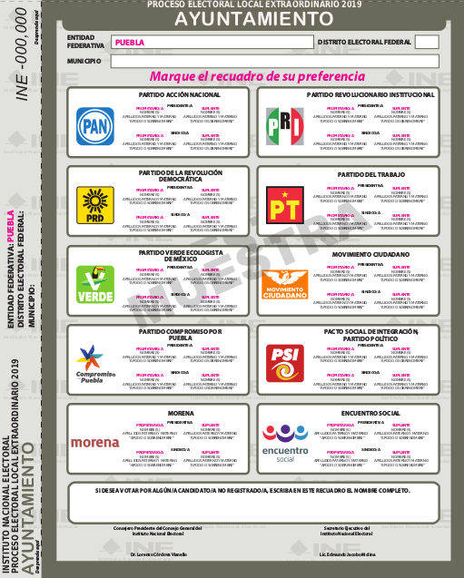
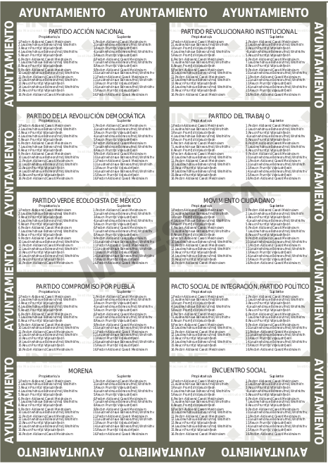
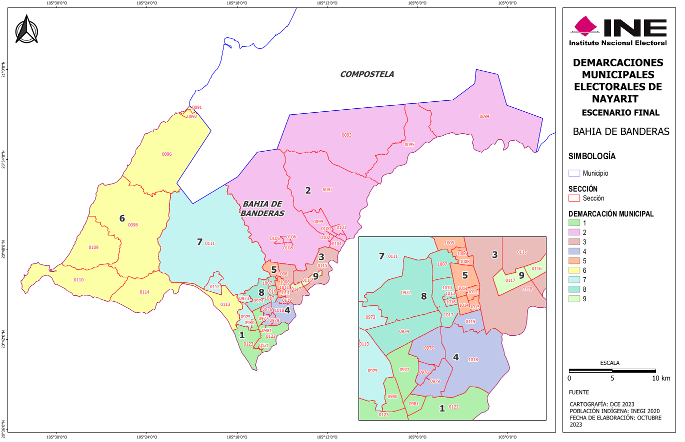

Just two of 32 Mexican states use more than a single fused ballot to elect municipal officers: Chihuahua and Nayarit.
Municipal governments, called ayuntamientos, have a president (who is the executive officer), one or more síndicos (financial officers) and a council (cabildo), whose members (regidores) deliberate and vote policy. To illustrate the mode of election, we travel back in time to the year 1997. Whatever institutional variance there is is not found in electoral rules: voters in every elected1 ayuntamiento nationwide have a single vote; and they vote for a fused president–council ticket. Fig 1 shows a fused ballot specimen, the president and síndico candidates in the front, the closed list of council member candidates in the back. The ballot cannot be split. The most voted-for ticket wins the municipal president, and a fraction (variable across states) of síndicos and the council membership. The remainder síndico, if any, and the rest of the council are allocated by proportional representation.
|  |  |
The first exception to this rigid election system came in 1998, when reformers in Chihuahua made the síndico a separate elected office in the state's 67 municipal governments. Voters since have a second vote to elect their municipal síndico by plurality in the municipality at large. Chihuahuan síndico vote returns since 1998 are available here.
Then came Nayarit. Nayarita voters since 2008 have two votes as well, one for a fused president--síndico ticket, another to elect a fraction of council regidores in single-member plurality districts (called demarcaciones). Fig 1 is a map of one Nayarita municipality's demarcaciones. Each geographic unit returns one regidor to the municipal council. The remainder regidores are allocated by proportional representation. Demarcación vote returns are available here and here.

Figure 1: Bahía de Banderas, Nayarit municipality's nine demarcaciones (from https://ieenayarit.org/geografia)
Institutions are one important determinant of political outcomes by setting up incentives for candidates and municipal officers. Ambitious politicians vie to occupate municipal offices with policy making powers, and electoral rules favor strategies to compete for the popular vote (Myerson 1995). While still limited in the table below, reformers have created slight institutional variance, and thus an opportunity to shed light on Mexican municipal governments with cross-sectional and cross-temporal studies of policy.
| Election rule | N | % |
|---|---|---|
| Fused ballots | 1,962 | 79 |
| Síndico elected separately | 67 | 3 |
| Regidores elected in SMDs | 18 | 1 |
| Unelected usos y costumbres | 423 | 17 |
| Total municipalities | 2,470 | 100 |
Elizarrarás, Rodrigo. 2002. Gobernabilidad y autonomía indígena: motivos y efectos en el reconocimiento de los usos y costumbres en Oaxaca. BA thesis, ITAM.
Myerson, Roger B. 1995. Analysis of Democratic Institutions: Structure, Conduct, and Performance. Journal of Economic Perspectives 9(1):77–89.
In 1995, Oaxaca legislated Usos y costumbres municipalities. These opted out of the electoral process, selecting municipal officers with "traditional" methods. See Elizarrarás 2002. Of 570 municipalities in the state, 418 (mostly with a native American majority) migrated to usos y costumbres. The remaining 152 retained elections, and one more moved out of, then back into the election track. Since, one municipality is Chiapas, one in Michoacán, and three in Morelos adopted usos y costumbres.